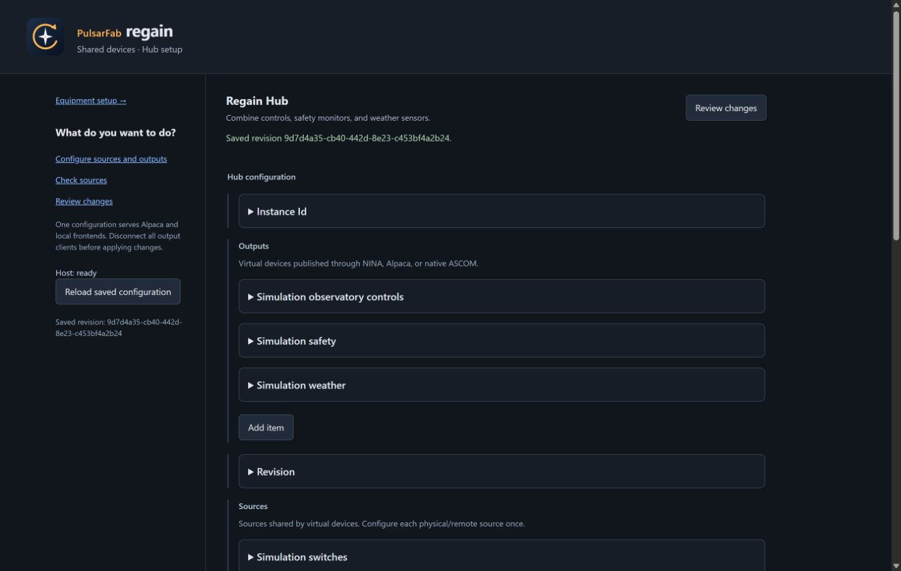
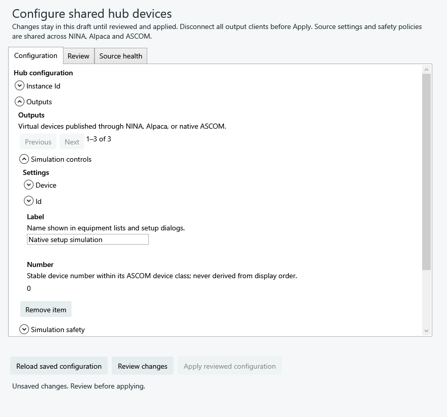

0.6 development preview
One hub for your equipment.
Combine device sources, then use the same saved outputs in native NINA, Windows ASCOM and Alpaca.
This guide describes the development branch. Published 0.5 packages do not include the hub. External conformance, installed-client and physical acceptance remain open in the implementation plan.
What do you want to do?
Build one switch panel
Map writable switches and read-only gauges from several drivers into one Switch output. Give each channel a label and units; write permission and bounds remain explicit.
Require several safety monitors to agree
Combine selected monitors with freshness limits, confirmations and a recovery hold. Missing or expired evidence returns unsafe. Reconnecting alone does not establish permission to continue imaging.
Combine weather instruments
Choose sources and fallbacks per metric. Each reading retains its age and availability; a missing measurement does not become zero.
Use an installed ASCOM driver over Alpaca
Run the hub on Windows, import the driver through an isolated 32-bit or 64-bit helper, then publish an output of that device class. A stalled driver has a bounded deadline and cannot keep old safety evidence fresh.
Share equipment across applications
Several outputs can reference one source connection. Native NINA attaches directly over private local IPC; it needs neither an ASCOM output nor an HTTP listener. ASCOM and Alpaca attach to the same host. Camera captures and motion have explicit ownership rather than independent competing commands.
Coordinate a set of cameras or focusers
Configure an explicit camera or focuser group and invoke it from a Regain NINA sequence item. Camera groups retain separate images and frozen scalar metadata. Both group types report each member's result, including partial success; they do not promise atomic hardware action or a simultaneous shutter.
Inputs and outputs
| Inputs | Outputs | Frontends |
|---|---|---|
| Supported native Regain devices, Alpaca, Windows ASCOM, another hub output, explicit simulation | Camera, Focuser, Rotator, FilterWheel, CoverCalibrator, Switch, SafetyMonitor, ObservingConditions | Native NINA, native Windows ASCOM, Alpaca |
Sources must implement the selected device class. Native hardware coverage remains model-specific; see supported hardware and the development support table. Mounts and domes are outside this hub's scope.
Native camera sources reuse Regain's SDK/direct recovery engine. Republishing an upstream camera does not add SDK-free image rereads; those require a supported native direct driver.
Set up once
- Build and deploy matching frontends and workers from the development branch. Create a new configuration in native setup, or run
regain-alpaca --hub-init --hub-config ABSOLUTE_NEW_FILE_PATH. This creates an empty file without starting equipment. - In a NINA hub configure choice, select the file, choose Load hub outputs, then Edit shared configuration. Browser setup uses
regain-alpaca --hub-config ABSOLUTE_FILE_PATH --port 11111andhttp://127.0.0.1:11111/setup/hub. - Find sources through Alpaca discovery or the local native/COM catalogs. Discovery creates a draft; configure source connection policy and add the outputs you need.
- Select Review changes, disconnect output clients, then Apply. The native and browser editors use the same parameter keys, descriptions, defaults and validation.
- Select the saved output in NINA or Alpaca. For native ASCOM, open Hub outputs setup and register the selected output. Connecting a client acquires the source leases.
Saved UUIDs and device numbers keep output identity stable across renaming and reordering. Several outputs share equipment by referencing the same source ID. Standalone drivers and vendor applications still need to release that physical device before the hub opens it.




Transfer settings
Use Import / export to export saved configuration without credentials. Restore keeps the current hub's identities; Copy creates new identities and unused device numbers for another hub. Review hardware addresses and bind credentials on the destination before applying. Import prepares an inert draft and does not restore active sessions.
Recover without replaying commands
Source failures and OS resume invalidate old observations. Safety stays unsafe until fresh evidence satisfies its policy. Typed equipment sessions require explicit reconnect after their source generation changes. Interrupted exposures and writes retain an uncertain outcome for reconciliation; the hub does not repeat them automatically.
Follow the full setup guide for source-specific controls, credentials, discovery, group operations and recovery. The conformance record separates simulated protocol coverage from remaining acceptance.